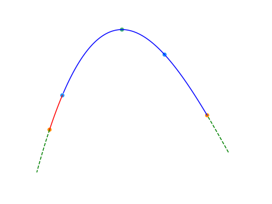
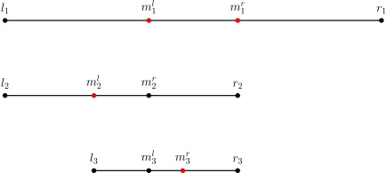

Binary
💾 AI智能摘要 (DeepSeek)
本文系统介绍了二分查找算法及其衍生应用，包括算法定义、时间复杂度分析（最优O(1)，最坏O(log n)）和空间复杂度（迭代O(1)，递归O(log n)）。重点阐述了二分法在有序数组中的查找原理，以及如何扩展应用于"最大值最小化"等满足单调性的问题场景。同时提及了三分法、分数规划等衍生算法，并列举了C++标准库实现和典型习题。文章通过代码示例和数学分析，完整展现了二分搜索的核心思想与工程实践要点。
📖 阅读信息
阅读时间：2 分钟 | 中文字符：856 | 有效代码行数：67
本页面将简要介绍二分查找，由二分法衍生的三分法以及二分答案。
二分法¶
定义¶
二分查找（英语：binary search），也称折半搜索（英语：half-interval search）、对数搜索（英语：logarithmic search），是用来在一个有序数组中查找某一元素的算法。
过程¶
以在一个升序数组中查找一个数为例。
它每次考察数组当前部分的中间元素，如果中间元素刚好是要找的，就结束搜索过程；如果中间元素小于所查找的值，那么左侧的只会更小，不会有所查找的元素，只需到右侧查找；如果中间元素大于所查找的值同理，只需到左侧查找。
性质¶
时间复杂度¶
二分查找的最优时间复杂度为 \(O(1)\)。
二分查找的平均时间复杂度和最坏时间复杂度均为 \(O(\log n)\)。因为在二分搜索过程中，算法每次都把查询的区间减半，所以对于一个长度为 \(n\) 的数组，至多会进行 \(O(\log n)\) 次查找。
空间复杂度¶
迭代版本的二分查找的空间复杂度为 \(O(1)\)。
递归（无尾调用消除）版本的二分查找的空间复杂度为 \(O(\log n)\)。
实现¶
Note
参考 编译优化 #位运算代替乘法，对于 \(n\) 是有符号数的情况，当你可以保证 \(n\ge 0\) 时，n >> 1 比 n / 2 指令数更少。
最大值最小化¶
注意，这里的有序是广义的有序，如果一个数组中的左侧或者右侧都满足某一种条件，而另一侧都不满足这种条件，也可以看作是一种有序（如果把满足条件看做 \(1\)，不满足看做 \(0\)，至少对于这个条件的这一维度是有序的）。换言之，二分搜索法可以用来查找满足某种条件的最大（最小）的值。
要求满足某种条件的最大值的最小可能情况（最大值最小化），首先的想法是从小到大枚举这个作为答案的「最大值」，然后去判断是否合法。若答案单调，就可以使用二分搜索法来更快地找到答案。因此，要想使用二分搜索法来解这种「最大值最小化」的题目，需要满足以下三个条件：
- 答案在一个固定区间内；
- 可能查找一个符合条件的值不是很容易，但是要求能比较容易地判断某个值是否是符合条件的；
- 可行解对于区间满足一定的单调性。换言之，如果 \(x\) 是符合条件的，那么有 \(x + 1\) 或者 \(x - 1\) 也符合条件。（这样下来就满足了上面提到的单调性）
当然，最小值最大化是同理的。
STL 的二分查找¶
C++ 标准库中实现了查找首个不小于给定值的元素的函数 std::lower_bound 和查找首个大于给定值的元素的函数 std::upper_bound，二者均定义于头文件 <algorithm> 中。
二者均采用二分实现，所以调用前必须保证元素有序。
bsearch¶
bsearch 函数为 C 标准库实现的二分查找，定义在 <stdlib.h> 中。在 C++ 标准库里，该函数定义在 <cstdlib> 中。qsort 和 bsearch 是 C 语言中唯二的两个算法类函数。
bsearch 函数相比 qsort（排序相关 STL）的四个参数，在最左边增加了参数「待查元素的地址」。之所以按照地址的形式传入，是为了方便直接套用与 qsort 相同的比较函数，从而实现排序后的立即查找。因此这个参数不能直接传入具体值，而是要先将待查值用一个变量存储，再传入该变量地址。
于是 bsearch 函数总共有五个参数：待查元素的地址、数组名、元素个数、元素大小、比较规则。比较规则仍然通过指定比较函数实现，详见 排序相关 STL。
bsearch 函数的返回值是查找到的元素的地址，该地址为 void 类型。
注意：bsearch 与上文的 lower_bound 和 upper_bound 有两点不同：
- 当符合条件的元素有重复多个的时候，会返回执行二分查找时第一个符合条件的元素，从而这个元素可能位于重复多个元素的中间部分。
- 当查找不到相应的元素时，会返回 NULL。
用 lower_bound 可以实现与 bsearch 完全相同的功能，所以可以使用 bsearch 通过的题目，直接改写成 lower_bound 同样可以实现。但是鉴于上述不同之处的第二点，例如，在序列 1、2、4、5、6 中查找 3，bsearch 实现 lower_bound 的功能会变得困难。
利用 bsearch 实现 lower_bound 的功能比较困难，是否一定就不能实现？答案是否定的，存在比较 tricky 的技巧。借助编译器处理比较函数的特性：总是将第一个参数指向待查元素，将第二个参数指向待查数组中的元素，也可以用 bsearch 实现 lower_bound 和 upper_bound，如下文示例。只是，这要求待查数组必须是全局数组，从而可以直接传入首地址。
因为现在的 OI 选手很少写纯 C，并且此方法作用有限，所以不是重点。对于新手而言，建议老老实实地使用 C++ 中的 lower_bound 和 upper_bound 函数。
二分答案¶
解题的时候往往会考虑枚举答案然后检验枚举的值是否正确。若满足单调性，则满足使用二分法的条件。把这里的枚举换成二分，就变成了「二分答案」。
Luogu P1873 砍树
伐木工人米尔科需要砍倒 \(M\) 米长的木材。这是一个对米尔科来说很容易的工作，因为他有一个漂亮的新伐木机，可以像野火一样砍倒森林。不过，米尔科只被允许砍倒单行树木。
米尔科的伐木机工作过程如下：米尔科设置一个高度参数 \(H\)（米），伐木机升起一个巨大的锯片到高度 \(H\)，并锯掉所有的树比 \(H\) 高的部分（当然，树木不高于 \(H\) 米的部分保持不变）。米尔科就得到树木被锯下的部分。
例如，如果一行树的高度分别为 \(20,~15,~10,~17\)，米尔科把锯片升到 \(15\) 米的高度，切割后树木剩下的高度将是 \(15,~15,~10,~15\)，而米尔科将从第 \(1\) 棵树得到 \(5\) 米木材，从第 \(4\) 棵树得到 \(2\) 米木材，共 \(7\) 米木材。
米尔科非常关注生态保护，所以他不会砍掉过多的木材。这正是他尽可能高地设定伐木机锯片的原因。你的任务是帮助米尔科找到伐木机锯片的最大的整数高度 \(H\)，使得他能得到木材至少为 \(M\) 米。即，如果再升高 \(1\) 米锯片，则他将得不到 \(M\) 米木材。
解题思路
我们可以在 \(1\) 到 \(10^9\) 中枚举答案，但是这种朴素写法肯定拿不到满分，因为从 \(1\) 枚举到 \(10^9\) 太耗时间。我们可以在 \([1,~10^9]\) 的区间上进行二分作为答案，然后检查各个答案的可行性（一般使用贪心法）。这就是二分答案。
参考代码
看完了上面的代码，你肯定会有两个疑问：
-
为何搜索区间是左闭右开的？
因为搜到最后，会这样（以合法的最大值为例）：

然后会

合法的最小值恰恰相反。
-
为何返回左边值？
同上。
三分法¶
引入¶
二分法可以用于近似求出函数的零点。如果需要求出单峰函数的极值点，通常需要使用三分法（ternary search）。
对于一个函数 \(f(x)\)，如果存在 \(x^*\) 使得 \(f(x)\) 在 \(x<x^*\) 时单调递增且 \(f(x)\) 在 \(x>x^*\) 时单调递减，就称 \(f(x)\) 为单峰函数（unimodal function）。显然，\(x^*\) 就是它的最大值点，而 \(f(x^*)\) 则是它的最大值。
为什么不通过求导函数的零点来求极值点？
客观上，求出导数后，通过二分法求出导数的零点（由于函数是单峰函数，其导数在同一范围内的零点是唯一的）得到单峰函数的极值点是可行的。
但首先，对于一些函数，求导的过程和结果比较复杂。
其次，某些题中需要求极值点的单峰函数并非一个单独的函数，而是多个函数进行特殊运算得到的函数（如求多个单调性不完全相同的一次函数的最小值的最大值）。此时函数的导函数可能是分段函数，且在函数某些点上可能不可导。
注意
三分法既可以求出单峰函数的最大值，也可以求出「单谷函数」的最小值。为行文方便，除特殊说明外，下文中均以求单峰函数的最大值为例。
过程¶
三分法与二分法的基本思想类似，但每次操作需在当前区间 \([l,r]\)（下图中两个橙点之间）内任取两点 \(lmid < rmid\)（下图中的两个蓝点）。如下图所示，如果 \(f(lmid)<f(rmid)\)，则在 \([l,lmid)\)（下图中的红色部分）中函数必然单调递增，最大值点（下图中的绿点）必然不在这一区间内，可舍去这一区间；但是，无法排除最大值点在 \(rmid\) 右侧的可能性，所以无法舍去更多区间。反之亦然。

三分法的正确性并不依赖于 \(lmid\) 和 \(rmid\) 的选择，通常可以取两个三等分点。但是，它们的选择确实会影响三分法的效率。这是因为三分法的每次操作都会舍去两侧区间中的其中一个。为减少三分法的操作次数，应使两侧区间尽可能大。因此，每一次操作时的 \(lmid\) 和 \(rmid\) 分别取 \(mid-\varepsilon\) 和 \(mid+\varepsilon\) 是一个不错的选择。
实现¶
伪代码如下：
整数的情形
如果函数 \(f(x)\) 的定义域是整数，那么上述三分法和后文的黄金分割法都应该在 \(r-l\) 很小时就终止。对于 \(r-l\) 很小的情形，需要通过暴力遍历的方法求得最大值点。
优化：黄金分割法¶
如果单次调用 \(f(x)\) 的成本很高，需要进一步减少 \(f(x)\) 的调用次数，可以通过黄金分割法（golden-section search）进一步改进三分法的常数。这也是华罗庚提出的优选法的重要内容。
三分法中，每轮迭代需要两次函数调用，且单轮迭代后区间长度至多缩短到原来的 \(1/2\)。这意味着，要达到精度 \(\varepsilon\)，至少需要
次函数调用。这是三分法能够取得的最好的结果。如果选取其他分点，例如三等分点，那么调用次数会进一步增加，因为单轮迭代后区间缩短得更慢。
黄金分割法的改进思路是，复用前文已经计算过的分点。这样，除了第一轮迭代需要两次函数调用外，其余轮次的迭代只需要一次函数调用。设黄金分割比为
每轮迭代时，选取的分点是左右两个黄金分割点：
黄金分割点分割线段具有自相似结构。也就是说，\(m^l\) 是线段 \([l,r]\) 的左黄金分割点，也是线段 \([l,m^r]\) 的右黄金分割点。这样选取分点的好处是，第 \(k>1\) 轮迭代选取的分点中，一定有一个分点是之前已经计算过的，可以直接复用之前的计算结果。

这样选取分点后，要达到精度 \(\varepsilon\)，只需要
次函数调用。渐进意义上，函数的调用次数更少。
伪代码如下：
例题¶
洛谷 P3382 -【模板】三分法
给定一个 \(N\) 次函数和范围 \([l, r]\)，求出使函数在 \([l, x]\) 上单调递增且在 \([x, r]\) 上单调递减的唯一的 \(x\) 的值。
解题思路
本题要求求 \(N\) 次函数在 \([l, r]\) 取最大值时自变量的值，显然可以使用三分法。
习题¶
分数规划¶
参见：分数规划
分数规划通常描述为下列问题：每个物品有两个属性 \(c_i\)，\(d_i\)，要求通过某种方式选出若干个，使得 \(\frac{\sum{c_i}}{\sum{d_i}}\) 最大或最小。
经典的例子有最优比率环、最优比率生成树等等。
分数规划可以用二分法来解决。